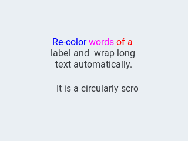
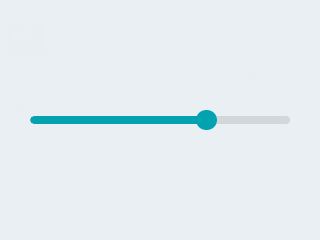
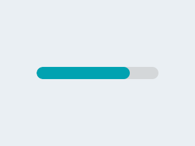
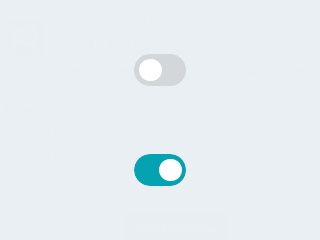
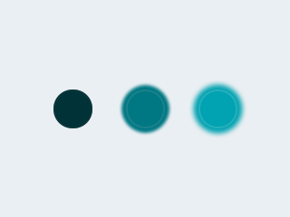
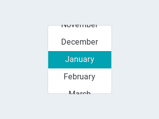

Styling Properties#
You can adjust the appearance of objects by changing the foreground, background and/or border color of each object.
Object Types#
Each object type is an ID that indicates which object type that line represents. Besides the common properties listed above, each object type can have specific properties.
Button#
objid:10
A button can have 3 states. All the following parameters can be appended by a number to change the appearance of that state only: - 0: Released - 1: Pressed - 2: Disabled
Or if the postfix index is ommited, then the default state 0 or Pressed is used.
A button can accept the attributes of the following groups: - Background - Border - Outline - Shadow - Value
Attribute groups#
Padding and Margin#
Padding sets the space on the inner sides of the edges. It means "I don't want my children too close to my sides, so keep this space".Padding inner set the "gap" between the children. Margin sets the space on the outer side of the edges. It means "I want this space around me".
Objects use them to set spacing. See the documentation of the objects for the details.
| Property | Type | Required | Default | Description |
|---|---|---|---|---|
| pad_top | int | Set the padding on the top | ||
| pad_bottom | int | Set the padding on the bottom | ||
| pad_left | int | Set the padding on the left | ||
| pad_right | int | Set the padding on the right | ||
| pad_inner | int | Set the padding inside the object between children | ||
| margin_top | int | Set the margin on the top | ||
| margin_bottom | int | Set the margin on the bottom | ||
| margin_left | int | Set the margin on the left | ||
| margin_right | int | Set the margin on the right |
Background#
| Property | Type | Required | Default | Description |
|---|---|---|---|---|
| bg_opa | byte | no | "" | The background opacity level |
| bg_color | color | no | true | The background color |
| bg_grad_color | color | no | 0 | The background gradient color |
| bg_grad_dir | [0..2] | no | expand | 0 = None, 1 = Horizontal, 2 = Vertical |
| bg_grad_stop | byte | no | expand | Specifies where the gradient should stop. 0: at left/top most position, 255: at right/bottom most position. Default value: 255. |
| bg_main_stop | byte | no | expand | Specifies where should the gradient start. 0: at left/top most position, 255: at right/bottom most position. Default value: 0. |
Border#
The border is drawn on top of the background. It has radius rounding.
| Property | Type | Required | Default | Description |
|---|---|---|---|---|
| border_color | color | Specifies the color of the border | ||
| border_opa | byte | Specifies opacity of the border | ||
| border_width | byte | Set the width of the border | ||
| border_side | byte | Specifies which sides of the border to draw. Can be 0=LV_BORDER_SIDE_NONE/1=LEFT/2=RIGHT/4=TOP/8=BOTTOM/15=FULL. A sum of these values is also possible to select specific sides. | ||
| border_post | bool | If true the border will be drawn after all children have been drawn. |
Shadow#
The shadow is a blurred area under the object.
| Property | Type | Required | Default | Description |
|---|---|---|---|---|
| shadow_color | color | Specifies the color of the shadow | ||
| shadow_opa | byte | Specifies opacity of the shadow | ||
| shadow_width | int16 | Set the width (blur size) of the outline | ||
| shadow_ofs_x | int16 | Set the an X offset for the shadow | ||
| shadow_ofs_y | int16 | Set the an Y offset for the shadow | ||
| shadow_spread | byte | make the shadow larger than the background in every direction by this value |
Value#
Value is an arbitrary text drawn to the background. It can be a lightweighted replacement of creating label objects.
| Property | Type | Required | Default | Description |
|---|---|---|---|---|
| value_str | string | Text to display. Only the pointer is saved! (Don't use local variable with lv_style_set_value_str, instead use static, global or dynamically allocated data) | ||
| value_color | color | Color of the text | ||
| value_opa | byte | Opacity level of the text [0-255] | ||
| value_font | byte | The font ID | ||
| value_letter_space | int | Letter space of the text | ||
| value_line_space | int | Line space of the text | ||
| value_align | align | Alignment of the text. Can be LV_ALIGN_.... Default value: LV_ALIGN_CENTER. | ||
| value_ofs_x | int | X offset from the original position of the alignment | ||
| value_ofs_y | int | Y offset from the original position of the alignment |
Text#
Properties for textual object.
| Property | Type | Required | Default | Description |
|---|---|---|---|---|
| text_color | color | Color of the text | ||
| text_opa | byte | Opacity level of the text [0-255] | ||
| text_font | byte | Font ID | ||
| text_letter_space | int | Letter space of the text | ||
| text_line_space | int | Line space of the text | ||
| text_decor | byte | Add text decoration. 0=None, 1=Underline, 2=Strikethrough, 3=Underline&Strikethrough | ||
| text_sel_color | color | Set background color of text selection |
Line#
n/a
Image#
n/a
Outline#
n/a
Pattern#
n/a
Transitions#
n/a
Checkbox#
objid:11
 {: .align-center}
{: .align-center}
| Property | Value | Required | Default | Description |
|---|---|---|---|---|
| val | int16 | no | 0 | The value: 1 for checked, 0 for unchecked |
| txt | string | no | "Checkbox" | The label of the checkbox |
Text Label#
objid:12
{: .align-center}
| Property | Value | Required | Default | Description |
|---|---|---|---|---|
| txt | string | no | "Text" | The text of the label |
| mode | string | no | expand | The wrapping mode of long text labels |
Possible wrapping modes are: expand, break, dots, scroll and loop
{"page":2,"id":1,"objid":12,"h":24,"w":120,"txt":"\ufe05 Icon Demo"}
Spinner#
objid:21
 {: .align-center}
{: .align-center}
| Property | Value | Required | Default | Description |
|---|---|---|---|---|
| speed | int16 | no | 1000 | The time for 1 furn in ms |
| direction | int16 | no | 100 | 0 for clockwise, 1 for counter-clockwise |
| thickness | int16 | no | dep. on theme | The width of the arcline |
Colorpicker#
objid:20
 {: .align-center}
{: .align-center}
| Property | Value | Required | Default | Description |
|---|---|---|---|---|
| val | uint16 | no | 0 | The selected color in RBG565 format |
| color | hex string | no | 0 | The selected color in html format #rrggbb |
| rect | boolean | no | false | True if the color picker has a rectangular shape like a slider. False for a circular shape. |
Slider#
objid:30
{: .align-center}
| Property | Value | Required | Default |
|---|---|---|---|
| min | int16 | no | 0 |
| max | int16 | no | 100 |
| val | int16 | no | 0 |
Double Slider#
objid:30
| Property | Value | Required | Default |
|---|---|---|---|
| min | int16 | no | 0 |
| max | int16 | no | 100 |
| val | int16 | no | 0 |
Gauge#
objid:31
 {: .align-center}
{: .align-center}
| Property | Value | Required | Default |
|---|---|---|---|
| min | int16 | no | 0 |
| max | int16 | no | 100 |
| val | int16 | no | 0 |
Progressbar#
objid:32
{: .align-center}
| Property | Value | Required | Default |
|---|---|---|---|
| min | int16 | no | 0 |
| max | int16 | no | 100 |
| val | int16 | no | 0 |
Switch#
objid:40
{: .align-center}
| Property | Value | Required | Default | Description |
|---|---|---|---|---|
| val | int16 | no | 0 | The value: 1 for on, 0 for off |
LED Indicator#
objid:41
{: .align-center}
| Property | Value | Required | Default | Description |
|---|---|---|---|---|
| val | byte | no | 0 | The brightness of the indicator 0-255 |
Dropdown List#
objid:50
 {: .align-center}
{: .align-center}
| Property | Value | Required | Default | Description |
|---|---|---|---|---|
| options | string | no | "" | The items separated by \n |
| val | int16 | no | 0 | The number of the selected item |
| txt | string | no | "" | Read-only The text of the selected item |
To change the currently selected item, use the val attribute.
To change the items in the list, use the options attribute.
When the item is changed both val and txt of the newly selected item are send out.
Roller#
objid:51
{: .align-center}
| Property | Value | Required | Default | Description |
|---|---|---|---|---|
| options | string | no | "" | The items separated by \n |
| val | int16 | no | 0 | The number of the selected item |
| txt | string | no | "" | Read-only The text of the selected item |
| rows | int8 | no | 3 | The number ow rows that are visible |
?> A roller does not use the h attribute to set its height, but uses the rows to set the visible number of rows instead.
To change the currently selected item, use the val attribute.
To change the items in the list, use the options attribute.
When the item is changed both val and txt of the newly selected item are send out.
Example file#
This is a real-world demo pages.jsonl file:
{"comment":"---------- Page 0 ----------"}
{"objid":10,"id":1,"page":0,"x":10,"y":45,"w":220,"h":55,"toggle":"TRUE","txt":"Toggle Me \uf0a6"}
{"objid":11,"id":2,"page":0,"x":10,"y":100,"w":220,"h":55,"txt":"Checkbox 1"}
{"objid":12,"id":3,"page":0,"x":10,"y":10,"w":220,"h":30,"txt":"Text Label 1","align":1,"padh":50}
{"objid":40,"id":4,"page":0,"x":70,"y":205,"w":100,"h":55}
{"objid":41,"id":5,"page":0,"x":10,"y":205,"w":55,"h":55}
{"objid":50,"id":6,"page":0,"x":10,"y":150,"w":150,"txt":"\uf007 Option 1\n\uf007 Option 2\n\uf007 Option 3"}
{"objid":21,"id":7,"page":0,"x":165,"y":140,"w":70,"h":70}
{"comment":"---------- Page 1 ----------"}
{"objid":30,"id":1,"page":1,"x":10,"y":170,"w":200,"h":50}
{"objid":31,"id":3,"page":1,"x":13,"y":10,"w":100,"h":100}
{"objid":32,"id":4,"page":1,"x":10,"y":110,"w":200,"h":50}
{"objid":33,"id":5,"page":1,"x":127,"y":10,"w":100,"h":100}
{"objid":12,"id":10,"page":1,"x":0,"y":0,"w":70,"h":50,"parentid":5,"txt":"\uf00c OK"}
{"comment":"---------- Page 2 ----------"}
{"objid":20,"id":1,"page":2,"x":20,"y":0,"w":200,"h":200}
{"objid":20,"id":2,"page":2,"x":20,"y":210,"w":200,"h":50,"rect":"TRUE"}
{"comment":"---------- Page 3 ----------"}
{"objid":50,"id":1,"page":3,"x":10,"y":10,"w":220,"txt":"Spring\nSummer\nAutumn\nWinter"}
{"objid":51,"id":2,"page":3,"x":40,"y":50,"w":160,"txt":"2018\n2019\n2020\n2021\n2022\n2023\n2024","rows":4}
{"comment":"---------- Page 254 ----------"}
{"objid":10,"id":1,"page":254,"x":0,"y":270,"w":75,"h":50,"opacity":100,"txt":"\uF053 Prev"}
{"objid":10,"id":2,"page":254,"x":75,"y":270,"w":90,"h":50,"opacity":100,"txt":"\uF015 Home"}
{"objid":10,"id":3,"page":254,"x":165,"y":270,"w":75,"h":50,"opacity":100,"txt":"Next \uF054"}